Capturas de tela


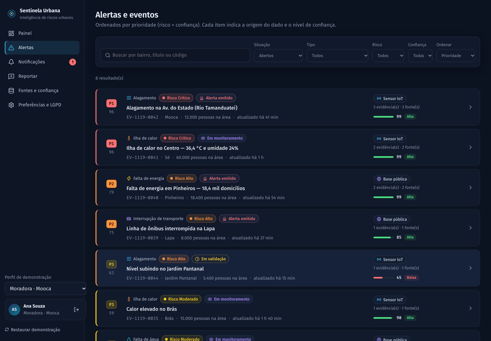
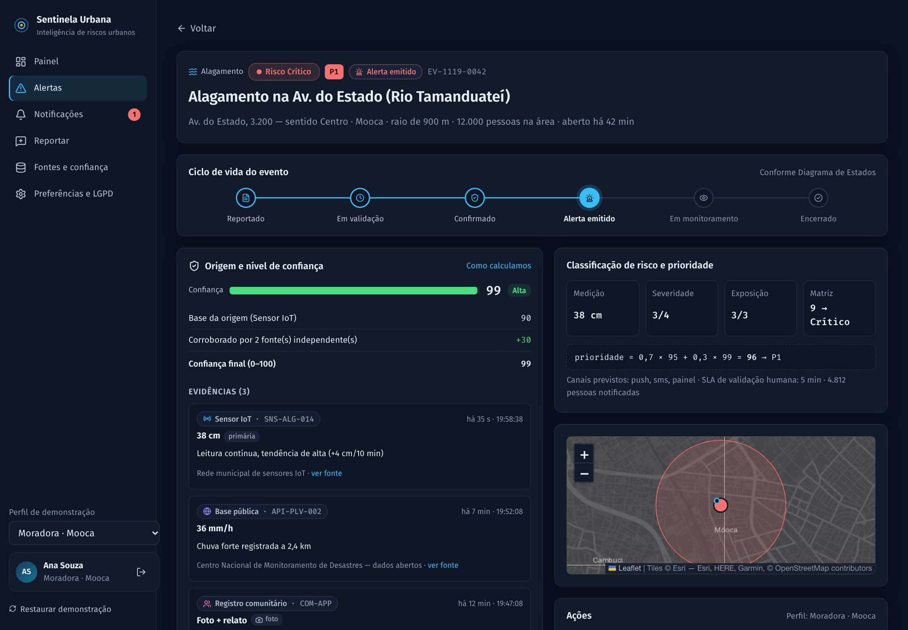
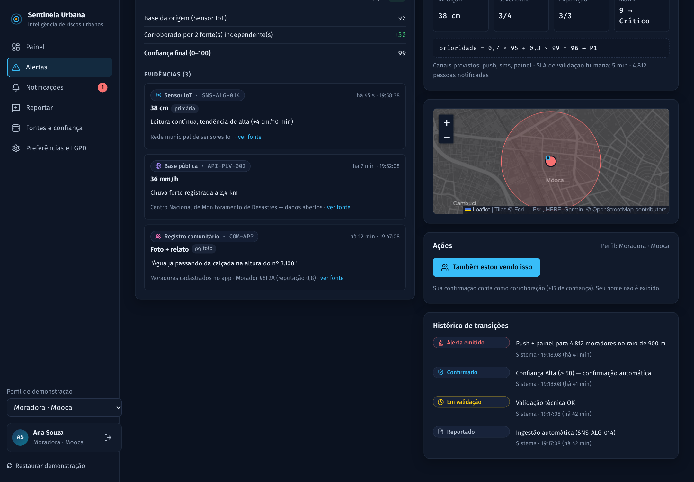
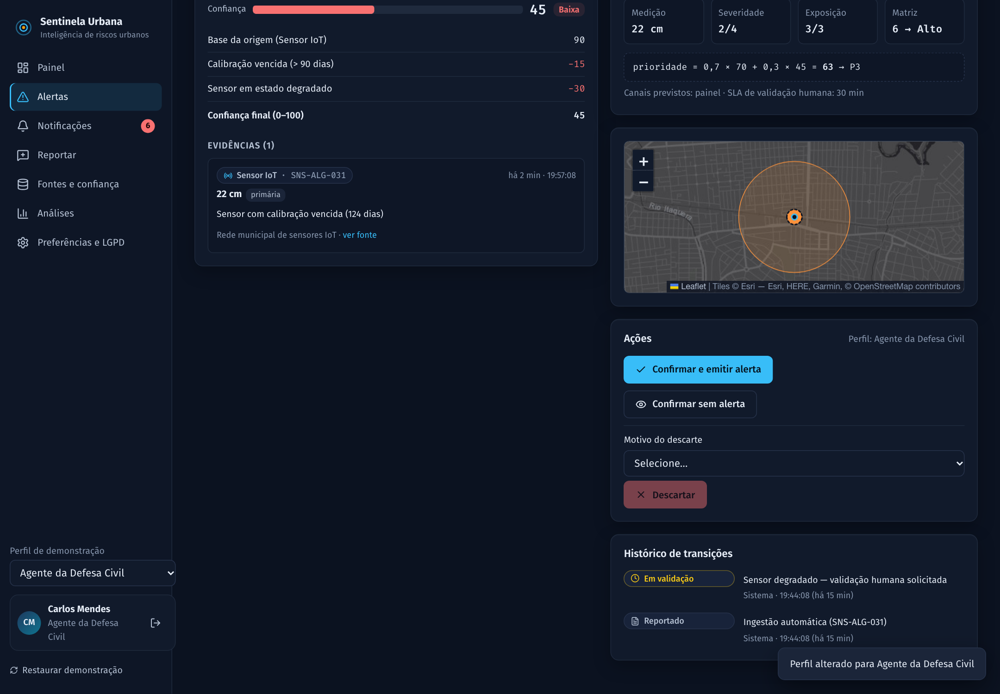
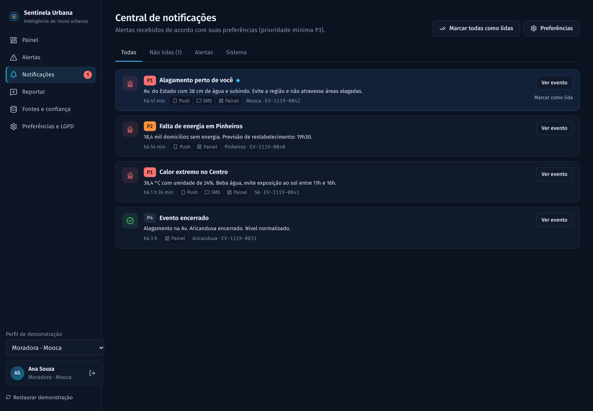
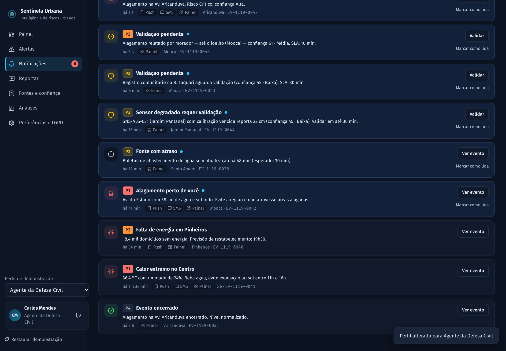
Urban Risk Intelligence Platform — documentação técnica: requisitos, regras de priorização, diagramas UML de Sequência e de Estados, arquitetura em camadas e protótipo funcional.
| Nome completo | RM |
|---|---|
| {{NOME_1}} | {{RM_1}} |
| {{NOME_2}} | {{RM_2}} |
| {{NOME_3}} | {{RM_3}} |
| Protótipo (deploy) | https://juanitolen.github.io/sentinela-urbana/ |
|---|---|
| Repositório GitHub | https://github.com/juanitolen/sentinela-urbana |
| Vídeo de demonstração | {{LINK_VIDEO}} (arquivo: video/Demo-Sentinela-Urbana.mp4 no repositório) |
São Paulo, novembro de 2026 · Protótipo funcional web (React) com 10 telas · Todos os links com acesso “qualquer pessoa com o link”.
A Sentinela Urbana monitora três famílias de riscos cotidianos em áreas urbanas — alagamentos, ilhas de calor e interrupções de serviços essenciais (energia, água e transporte). Ela recebe dados de sensores IoT, bases públicas (meteorologia, pluviômetros, concessionárias, transporte em tempo real) e registros comunitários feitos por moradores no app. Cada dado passa por validação, recebe um nível de confiança calculado e é correlacionado a um evento de risco. O evento é classificado por nível de risco e prioridade, e as regras decidem se o alerta é emitido automaticamente ou se precisa de validação de um agente da Defesa Civil. As notificações chegam por push, SMS e painel, respeitando as preferências e os consentimentos de cada pessoa (LGPD).
Protótipo funcional em React (Vite) publicado na web, com 10 telas, 3 perfis de uso e um motor de regras real (app/src/engine/rules.js) que implementa as regras RN01–RN09 descritas neste documento. Os dados de sensores e APIs são simulados com atualização a cada 5 s, e um simulador de ingestão permite enviar leituras e acompanhar cada etapa do fluxo do Diagrama de Sequência.
Em grandes cidades brasileiras, riscos cotidianos como alagamentos repentinos, ondas de calor e quedas de energia, água ou transporte afetam milhões de pessoas todos os anos. Os dados existem, mas estão espalhados: sensores municipais, institutos de meteorologia, concessionárias e relatos em redes sociais. Isso gera três problemas:
Auxiliar administrativa, mora na Mooca, perto do Rio Tamanduateí. Usa o celular para tudo e vai ao trabalho de ônibus.
Dores: já perdeu móveis em um alagamento; recebe boatos no WhatsApp e não sabe em que acreditar.
Objetivos: ser avisada antes de sair de casa; saber se o alerta é confiável; avisar a vizinhança rapidamente.
Telas: Painel, Alertas, Notificações, Reportar, Preferências.
Agente há 12 anos, coordena uma equipe de campo na região central. Trabalha em plantões de 12 h.
Dores: recebe dezenas de chamados duplicados; não sabe quais são reais; dispara alertas tarde demais.
Objetivos: ver tudo priorizado num só painel; validar ou descartar relatos em segundos; emitir alertas com segurança.
Telas: Painel, Alertas, Detalhe (validação), Notificações (tarefas), Análises.
Analista do centro de operações de uma distribuidora de energia.
Dores: a população não sabe da previsão de restabelecimento e lota a central telefônica.
Objetivos: publicar atualizações oficiais; acompanhar impactos (falta de energia afetando semáforos e bombas de água).
Telas: Painel, Alertas, Detalhe (atualizações), Fontes, Análises.
Reduzir o tempo entre o início de um evento e o aviso à população para menos de 60 segundos quando há sensores, diminuir falsos alarmes com a validação por confiança e dar transparência sobre a origem de cada informação, aumentando a confiança da população nos alertas oficiais.
Prioridade (MoSCoW simplificado): Alta = essencial ao MVP · Média = importante · Baixa = desejável. A coluna “Tela” indica onde o requisito aparece no protótipo (seção 8).
| ID | Descrição | Prioridade | Tela |
|---|---|---|---|
| RF01 | O sistema deve permitir acesso por perfil (morador, agente da Defesa Civil, operador de serviço) e exigir o aceite da Política de Privacidade no primeiro acesso, com consentimento opcional de localização. | Alta | T01 |
| RF02 | O sistema deve receber dados de sensores IoT (MQTT), bases públicas (REST/CSV/GTFS-RT) e registros comunitários (app), normalizando-os para um esquema canônico de evento. | Alta | T07, T08 |
| RF03 | O sistema deve validar tecnicamente cada dado recebido (esquema, faixa física plausível e saúde da fonte) e descartar dados inválidos registrando o motivo. | Alta | T04, T07 |
| RF04 | O sistema deve correlacionar dados do mesmo tipo em um raio de 500 m e janela de 30 min a um único evento, somando-os como evidências (deduplicação e corroboração). | Alta | T04 |
| RF05 | O sistema deve calcular e exibir, para cada dado e evento, a origem (tipo, identificador e responsável pela fonte), o horário da última atualização e o nível de confiança (0–100 e Alta/Média/Baixa) com a composição dos fatores. | Alta | T02–T04, T07, T08 |
| RF06 | O sistema deve classificar o nível de risco (Baixo, Moderado, Alto, Crítico) e a prioridade (P1–P4) de cada evento conforme as regras RN04–RN06. | Alta | T03, T04 |
| RF07 | O sistema deve exibir um painel de acompanhamento com mapa de eventos e fontes, indicadores (alertas ativos, validações pendentes, eventos abertos, fontes em dia), lista de prioridades e filtro por tipo de risco, atualizado em tempo real. | Alta | T02 |
| RF08 | O sistema deve listar alertas e eventos ordenados por prioridade, com busca e filtros por situação, tipo, nível de risco e nível de confiança. | Alta | T03 |
| RF09 | O sistema deve exibir o detalhe do evento com ciclo de vida, cálculo de risco e prioridade, evidências com origem e confiança, mapa da área afetada, rastro de processamento e histórico de transições. | Alta | T04 |
| RF10 | O sistema deve permitir que o morador registre uma ocorrência informando tipo, local (mapa ou localização atual), intensidade, descrição e foto opcional, mostrando a confiança inicial estimada antes do envio e um protocolo ao final. | Alta | T06 |
| RF11 | O sistema deve permitir que moradores confirmem um evento existente (“Também estou vendo isso”), registrando a confirmação como corroboração. | Média | T04 |
| RF12 | O sistema deve permitir que o agente da Defesa Civil confirme (com ou sem alerta), descarte com motivo, emita, reemita, mova para monitoramento e encerre eventos, respeitando as transições do Diagrama de Estados. | Alta | T04, T05 |
| RF13 | O sistema deve enviar notificações por push, SMS e painel de acordo com a prioridade do evento (RN08), a área afetada e as preferências e consentimentos do usuário. | Alta | T05 |
| RF14 | O sistema deve oferecer uma central de notificações com abas (todas, não lidas, alertas, tarefas, sistema), canais utilizados, marcação de leitura e acesso direto ao evento ou à tarefa de validação. | Alta | T05 |
| RF15 | O sistema deve exibir o catálogo de fontes com responsável, protocolo, frequência esperada, última atualização, situação (online, degradada, atrasada), disponibilidade e confiança base, além do detalhe de cada fonte com leituras recentes e linhagem do dado. | Alta | T07, T08 |
| RF16 | O sistema deve permitir que o operador de serviço publique atualizações oficiais (ex.: previsão de restabelecimento) e marque o serviço como restabelecido. | Média | T04 |
| RF17 | O sistema deve permitir que o usuário configure tipos de risco de interesse, prioridade mínima, canais (push, SMS, e-mail) e raio de interesse. | Média | T09 |
| RF18 | O sistema deve permitir ao titular gerenciar consentimentos, exportar seus dados (portabilidade) e solicitar a eliminação dos dados pessoais. | Alta | T09 |
| RF19 | O sistema deve apresentar análises com os indicadores de sucesso (tempo de atualização, qualidade dos alertas, facilidade de uso) e séries de eventos por tipo, situação e confiança. | Média | T10 |
| RF20 | O sistema deve registrar trilha de auditoria de acessos e tratamentos de dados pessoais, visível ao titular. | Média | T09 |
Classificação pelas características e subcaracterísticas do modelo de qualidade de produto da ISO/IEC 25010:2023. Cada requisito tem critério de aceitação mensurável.
| ID | Característica / subcaracterística | Requisito e critério de aceitação | Prior. |
|---|---|---|---|
| RNF01 | Eficiência de desempenho / Comportamento temporal Tempo de atualização | Do recebimento de um dado de sensor à entrega do alerta P1 ao usuário: ≤ 60 s no percentil 95 (meta de mediana ≤ 20 s). O painel reflete novas leituras em ≤ 10 s. Uma fonte é sinalizada como “atrasando” quando passa de 1,5× o intervalo esperado e “desatualizada” acima de 3×; dados com mais de 15 min perdem confiança (RN02). | Alta |
| RNF02 | Confiabilidade / Disponibilidade Disponibilidade | Disponibilidade mensal de 99,5% da plataforma e 99,9% do serviço de notificação. Implantação em pelo menos duas zonas de disponibilidade, com RTO ≤ 15 min e RPO ≤ 1 min. Monitoramento com health checks a cada 30 s. | Alta |
| RNF03 | Flexibilidade / Escalabilidade Escalabilidade | Suportar 50.000 leituras/min em operação normal e picos de 5× durante tempestades sem violar o RNF01, com escala horizontal automática dos serviços de processamento (barramento particionado por região). Notificar 2 milhões de destinatários em até 5 min. | Alta |
| RNF04 | Capacidade de interação (usabilidade) / Operabilidade, Inclusividade, Proteção contra erro do usuário Usabilidade | Conformidade com WCAG 2.2 nível AA (contraste ≥ 4,5:1, navegação por teclado, foco visível, alvos ≥ 44 px). Risco e confiança nunca indicados só por cor (sempre com rótulo textual). Registrar uma ocorrência em ≤ 4 etapas e < 60 s. Interface responsiva de 360 px a 1920 px. Pontuação SUS ≥ 75 em teste com usuários. | Alta |
| RNF05 | Segurança / Confidencialidade, Integridade, Responsabilização, Autenticidade Segurança e LGPD | Tratamento conforme a LGPD (Lei 13.709/2018): TLS 1.3 em trânsito e AES-256 em repouso; pseudonimização do relator; minimização (localização arredondada para 100 m, remoção de EXIF e borramento de rostos/placas em fotos); bases legais registradas (consentimento, proteção da vida — Art. 7º, I e VII); retenção de relatos por 12 meses e logs por 6 meses; atendimento aos direitos do titular (acesso, portabilidade, eliminação — Art. 18) em até 15 dias; controle de acesso por perfil (RBAC) e trilha de auditoria imutável de acessos a dados pessoais. Fontes autenticadas por mTLS ou token. | Alta |
| RNF06 | Confiabilidade / Tolerância a falhas, Recuperabilidade | A falha ou atraso de uma fonte não interrompe o processamento das demais. Mensagens no barramento têm reentrega com idempotência e fila de mensagens mortas; nenhum dado aceito (HTTP 202) pode ser perdido. | Alta |
| RNF07 | Proteção (safety) / Falha segura, Alerta de perigo | Nenhum alerta público é emitido com confiança < 50 ou baseado apenas em relato comunitário isolado sem validação humana (RN07). Alertas P1 ignoram o “não perturbe” e são enviados também por SMS. | Alta |
| RNF08 | Compatibilidade / Interoperabilidade | Uso de padrões abertos: MQTT para sensores, REST/JSON para APIs, GTFS-RT para transporte e CAP (Common Alerting Protocol) para exportar alertas a outros órgãos. | Média |
| RNF09 | Manutenibilidade / Modificabilidade, Testabilidade | Limiares e pesos das regras de negócio configuráveis sem novo deploy; motor de regras isolado em módulo próprio com cobertura de testes automatizados ≥ 80%. | Média |
| RNF10 | Flexibilidade / Adaptabilidade, Instalabilidade | Aplicação web responsiva instalável como PWA, funcionando em navegadores modernos (Chrome, Safari, Firefox, Edge) em desktop e celular. | Baixa |
As regras abaixo estão implementadas no protótipo em app/src/engine/rules.js e são aplicadas pelo pipeline em app/src/store/Store.jsx. A cada nova evidência, confiança, risco e prioridade são recalculados.
| Origem | Base | Justificativa |
|---|---|---|
| Agente de campo (Defesa Civil) | 95 | Observação direta de profissional treinado. |
| Sensor IoT calibrado | 90 | Medição física contínua e objetiva. |
| Base pública oficial (API) | 85 | Fonte institucional, porém com menor frequência de atualização. |
| Registro comunitário | 40 | Relato humano sem verificação; ganha confiança com evidências. |
| Fator | Ajuste |
|---|---|
| Corroboração: cada fonte independente no mesmo evento (500 m / 30 min), até 2 | +15 (máx. +30) |
| Reputação do relator comunitário (0 a 1, histórico de relatos confirmados) | +0 a +15 |
| Foto anexada ao relato comunitário | +10 |
| Idade do dado > 15 min / > 60 min | −10 / −25 |
| Sensor com calibração vencida (> 90 dias) | −15 |
| Sensor em estado degradado (falhas de leitura, bateria baixa) | −30 |
| Validação por agente da Defesa Civil | = 100 |
Alta: 75–100 · Média: 50–74 · Baixa: 0–49. Exibido sempre como barra + número + rótulo textual.
| Tipo | 1 | 2 | 3 | 4 |
|---|---|---|---|---|
| Alagamento (lâmina d’água) | < 10 cm | 10–30 cm | 31–50 cm | > 50 cm |
| Ilha de calor (temperatura) | < 32 °C | 32–34,9 °C | 35–37,9 °C | ≥ 38 °C ou ≥ 35 °C com umidade < 20% |
| Energia / água (domicílios) | < 1 mil | 1–10 mil | 10–50 mil | > 50 mil ou hospital/serviço crítico |
| Transporte (atraso/interrupção) | < 20 min | 20–60 min | 61–120 min | > 120 min |
Exposição (1 a 3) considera densidade populacional e vulnerabilidade da área: 1 = baixa, 2 = média, 3 = alta (área de risco mapeada, escolas, hospitais, população idosa).
| Produto (1–12) | 1–2 | 3–4 | 6–8 | 9–12 |
|---|---|---|---|---|
| Nível de risco | Baixo | Moderado | Alto | Crítico |
| Prioridade | Pontuação | SLA de validação humana | Exemplo |
|---|---|---|---|
| P1 | ≥ 85 | 5 min | Alagamento crítico com confiança 99 → 96 |
| P2 | 65–84 | 10 min | Falta de energia (risco alto) com confiança 99 → 79 |
| P3 | 45–64 | 30 min | Sensor degradado (risco alto) com confiança 45 → 63 |
| P4 | < 45 | 120 min | Alagamento baixo com confiança 90 → 41 |
| Prioridade | Ação após confirmação | Canais |
|---|---|---|
| P1 | Alerta emitido imediatamente | Push + SMS + painel (ignora “não perturbe”) |
| P2 | Alerta emitido | Push + painel |
| P3 | Alerta emitido | Painel / central de notificações |
| P4 | Sem alerta público — vai direto para monitoramento | Apenas registro |
Destinatários: pessoas com consentimento de localização ativo dentro do raio do evento e que optaram pelo tipo de risco e pela prioridade mínima (RF17). Agentes e operadores recebem P1–P3 e as tarefas de validação.
Fluxo: dado recebido (sensor, base pública ou registro comunitário) → validação → cálculo de confiança → classificação de risco → priorização → (validação humana, quando exigida por RN07) → filtro de consentimento LGPD → notificação ao usuário. Os participantes correspondem aos componentes da arquitetura da seção 7. O protótipo mostra este mesmo fluxo, com tempos, na tela “Rastro de processamento” (T04) e no Simulador de ingestão (T07).
sequenceDiagram autonumber participant F as Fonte externa
(Sensor / API pública / App) participant GW as API Gateway participant IN as Serviço de Ingestão participant BR as Barramento de Eventos participant PE as Processador de Eventos
(Validação + Correlação) participant CF as Serviço de Confiança participant RK as Motor de Risco participant AM as Gestor de Alertas actor DC as Agente Defesa Civil participant PV as Serviço de Privacidade
(LGPD) participant NT as Serviço de Notificação actor U as Morador (App) F->>GW: enviarDado(leitura, credencial) activate GW GW->>GW: autenticar (mTLS/token) e limitar taxa GW->>IN: encaminhar(leitura) activate IN IN->>IN: normalizar para esquema canônico IN->>BR: publicar("eventos.brutos", dado) IN-->>GW: 202 Accepted deactivate IN GW-->>F: 202 Accepted (protocolo) deactivate GW BR->>PE: consumir(dado) activate PE PE->>PE: validar esquema, faixa física e saúde da fonte alt dado inválido PE->>BR: publicar("eventos.descartados", motivo) else dado válido PE->>PE: correlacionar(tipo, raio 500 m, 30 min) PE->>CF: calcularConfianca(evidências, fonte) activate CF CF-->>PE: confiança 0–100 e nível deactivate CF PE->>RK: classificarRisco(medição, exposição) activate RK RK-->>PE: severidade × exposição → nível de risco deactivate RK PE->>AM: avaliar(evento, risco, confiança) deactivate PE activate AM AM->>AM: prioridade = 0,7·peso(risco) + 0,3·confiança alt confiança < 50 ou relato isolado (RN07) AM->>DC: solicitarValidacao(evento, SLA) DC-->>AM: confirmar() / descartar(motivo) else confiança ≥ 50 AM->>AM: confirmar automaticamente end opt evento confirmado e prioridade P1–P3 AM->>PV: obterDestinatarios(área, tipo, prioridade) activate PV PV-->>AM: destinatários com consentimento (pseudonimizados) deactivate PV AM->>NT: enviarAlerta(evento, destinatários, canais) activate NT par Push NT->>U: notificação push and SMS (somente P1) NT->>U: SMS and Painel NT->>U: item na central de notificações end U-->>NT: confirmação de entrega NT-->>AM: status de entrega deactivate NT end AM->>BR: publicar("alertas.emitidos") deactivate AM end
stateDiagram-v2 direction LR state "Reportado" as REP state "Em validação" as VAL state "Confirmado" as CON state "Alerta emitido" as ALE state "Em monitoramento" as MON state "Encerrado" as ENC state "Descartado" as DES [*] --> REP : dadoRecebido REP --> VAL : validaçãoTécnicaOK REP --> DES : [dado fora da faixa / esquema inválido] VAL --> VAL : novaEvidência / recalcularConfiança VAL --> CON : [confiança ≥ 50 e não isolado] / confirmar auto. VAL --> CON : agenteConfirma / confiança = 100 VAL --> DES : agenteDescarta(motivo) CON --> ALE : [prioridade P1–P3] / notificar CON --> MON : [prioridade P4] ou agenteConfirmaSemAlerta ALE --> MON : situaçãoEstável / acompanhar MON --> ALE : [prioridade aumentou] / reemitir alerta MON --> ENC : [medição normal por 60 min] ou serviçoRestabelecido ou agenteEncerra ENC --> [*] DES --> [*]
| Estado | Significado | Quem age |
|---|---|---|
| Reportado | Dado recebido e registrado; ainda não verificado. | Sistema (ingestão) |
| Em validação | Passou na validação técnica; aguarda confiança suficiente ou decisão humana. Novas evidências recalculam a confiança. | Sistema / Agente da Defesa Civil |
| Confirmado | Evento considerado real (automaticamente ou por agente). | Sistema / Agente |
| Alerta emitido | Notificações enviadas pelos canais da prioridade. | Gestor de Alertas |
| Em monitoramento | Situação acompanhada; pode ser reemitida se piorar. | Agente / Operador |
| Encerrado | Condição normalizada ou serviço restabelecido. Estado final. | Sistema / Agente / Operador |
| Descartado | Dado inválido, duplicado ou não confirmado. Estado final, com motivo registrado. | Sistema / Agente |
| De → Para | Evento / condição de guarda | Ação |
|---|---|---|
| — → Reportado | dadoRecebido | Cria evento ou agrega evidência (RF04) |
| Reportado → Em validação | validaçãoTécnicaOK | Calcula confiança, risco e prioridade |
| Reportado → Descartado | [valor fora da faixa física ou esquema inválido] | Registra motivo |
| Em validação → Em validação | novaEvidência | Recalcula confiança (corroboração +15) |
| Em validação → Confirmado | [confiança ≥ 50 e não é relato isolado] ou agenteConfirma | Confirmação automática ou confiança = 100 |
| Em validação → Descartado | agenteDescarta(motivo) | Encerra a tarefa de validação |
| Confirmado → Alerta emitido | [prioridade P1–P3] | Filtra consentimentos e notifica (RN08) |
| Confirmado → Em monitoramento | [prioridade P4] ou agenteConfirmaSemAlerta | Sem notificação pública |
| Alerta emitido → Em monitoramento | situaçãoEstável | Acompanhamento contínuo |
| Em monitoramento → Alerta emitido | [prioridade aumentou] | Reemite alerta (escalonamento) |
| Em monitoramento → Encerrado | [medição normal por 60 min] ou serviçoRestabelecido ou agenteEncerra | Notifica encerramento |
| Elemento | Localização e responsabilidade |
|---|---|
| Processamento de eventos | Camada de aplicação: Serviço de Ingestão → Barramento de Eventos (Kafka) → Processador de Eventos (validação e correlação), que alimenta Confiança, Motor de Risco e Gestor de Alertas. O barramento desacopla produtores e consumidores, garantindo escalabilidade (RNF03) e tolerância a falhas (RNF06). |
| Notificação | Camada de aplicação: Serviço de Notificação, acionado pelo Gestor de Alertas após o filtro de consentimento do Serviço de Privacidade. Usa filas próprias com reentrega e provedores redundantes de push e SMS para atingir 99,9% (RNF02). |
| Proteção de dados pessoais | Em três pontos: (1) apresentação — API Gateway com autenticação, RBAC e TLS; (2) aplicação — Serviço de Privacidade (consentimento, pseudonimização, minimização, direitos do titular); (3) dados — Cofre de dados pessoais isolado e criptografado e Log de auditoria append-only. Os demais serviços só veem identificadores pseudônimos. |
No protótipo, a camada de apresentação é o app React (app/src/pages); a camada de aplicação é simulada no navegador por app/src/store/Store.jsx (pipeline de ingestão, correlação, gestão de alertas e notificações) e app/src/engine/rules.js (Confiança, Motor de Risco e Priorização); a camada de dados é simulada com localStorage. Os nomes dos participantes do Diagrama de Sequência aparecem no “Rastro de processamento” de cada evento.
Protótipo funcional web com 10 telas (mais estados de confirmação e versão mobile), três perfis de demonstração e dados que se atualizam em tempo real. O perfil pode ser trocado no menu lateral para percorrer os fluxos de cada persona.
| Tela | Nome | Conteúdo principal | Requisitos |
|---|---|---|---|
| T01 | Entrada e consentimento | Escolha de perfil, aceite da política de privacidade, consentimento de localização | RF01, RF18 |
| T02 | Painel de acompanhamento ★ | Mapa de riscos e fontes, indicadores, prioridades, eventos por risco, frescor das fontes | RF05, RF07 |
| T03 | Lista de alertas ★ | Lista priorizada com filtros, origem e confiança de cada item | RF05, RF06, RF08 |
| T04 | Detalhe do alerta ★ | Ciclo de vida, origem e confiança com fatores, evidências, cálculo de prioridade, rastro de processamento, ações por perfil, histórico | RF03–RF06, RF09, RF11, RF12, RF16 |
| T05 | Central de notificações ★ | Abas, canais, tarefas de validação para agentes | RF13, RF14 |
| T06 | Registro comunitário ★ | Assistente em 4 etapas (tipo, local, detalhes, revisão), confiança estimada, protocolo | RF10, RNF04, RNF05 |
| T07 | Fontes e confiança ★ | Regras de confiança, catálogo de fontes, simulador de ingestão | RF02, RF03, RF05, RF15 |
| T08 | Detalhe da fonte ★ | Origem, protocolo, frescor, calibração, confiança atual, leituras, linhagem | RF05, RF15 |
| T09 | Preferências e LGPD | Tipos, prioridade mínima, canais, raio; consentimentos, exportar/excluir dados, auditoria | RF17, RF18, RF20 |
| T10 | Análises | Indicadores de sucesso e gráficos | RF19 |
★ = telas obrigatórias do enunciado (painel, lista/detalhe de alertas, central de notificações, registro comunitário e tela de origem e nível de confiança).






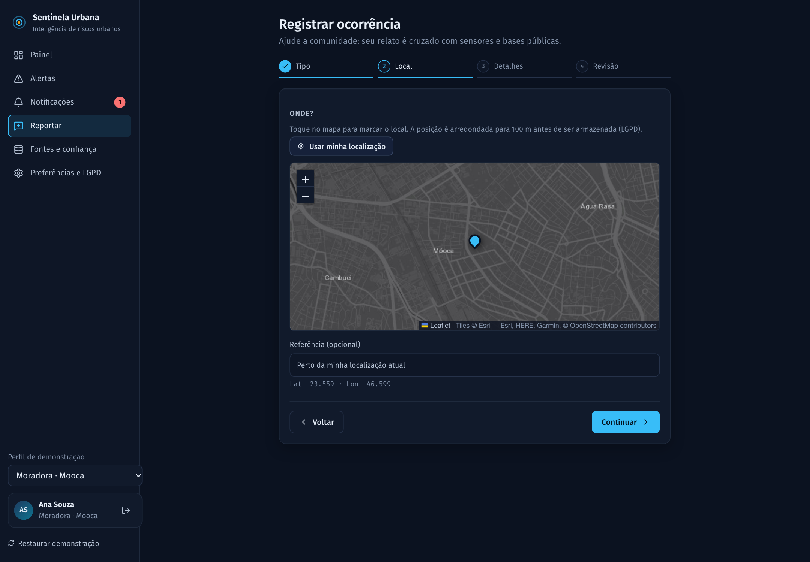
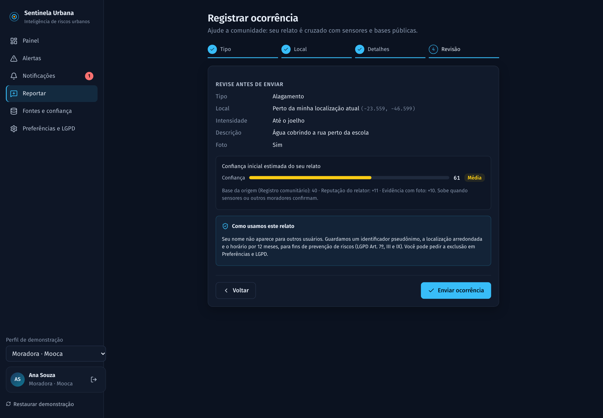
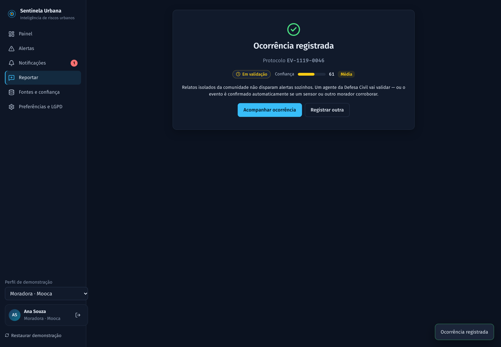
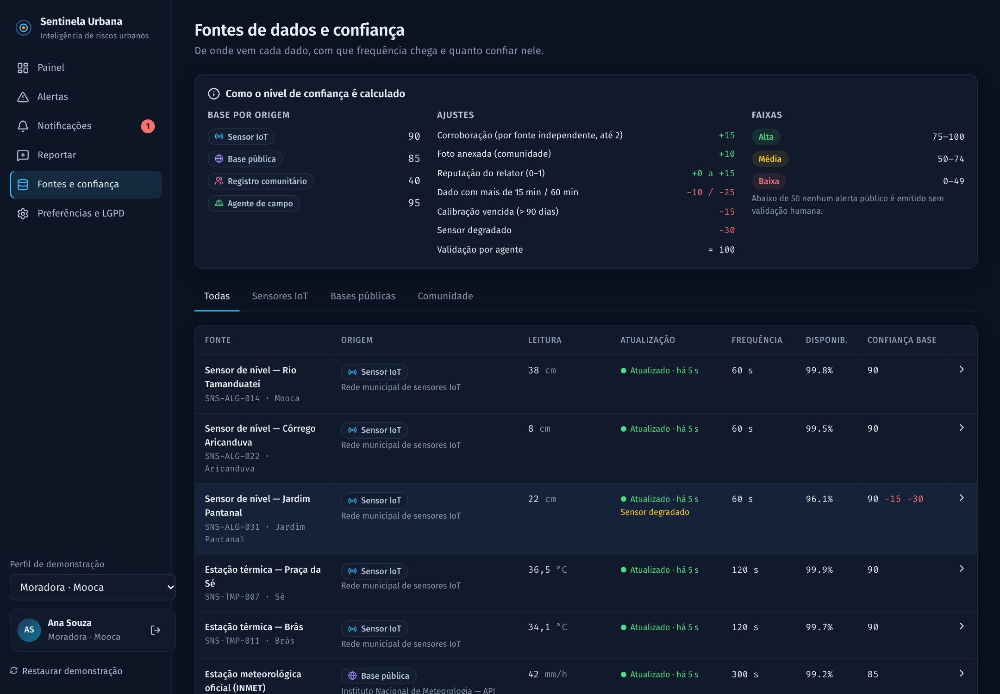

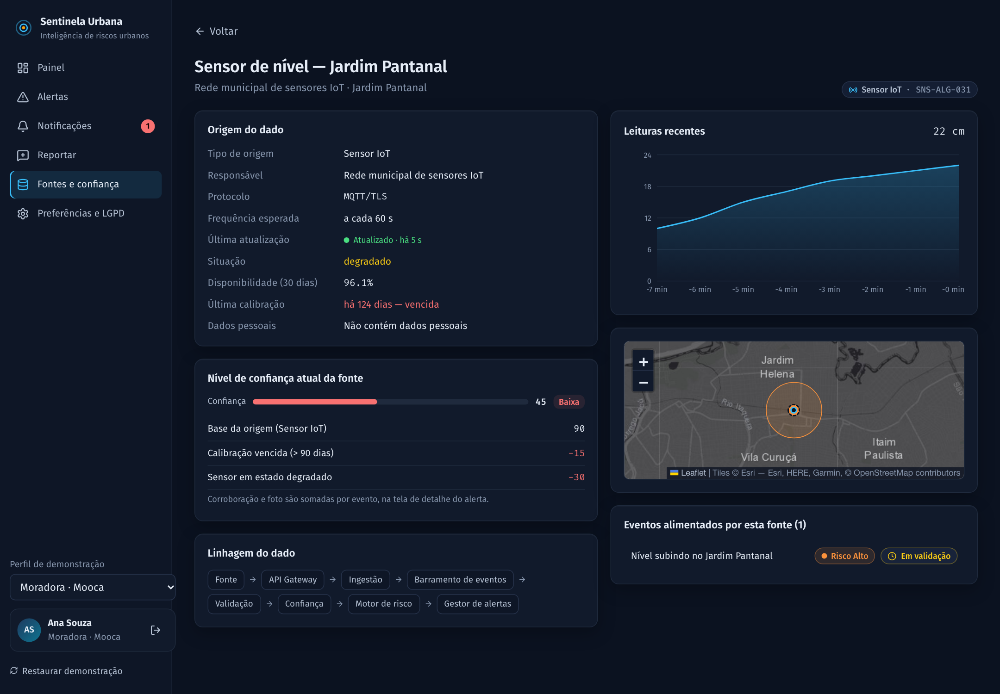


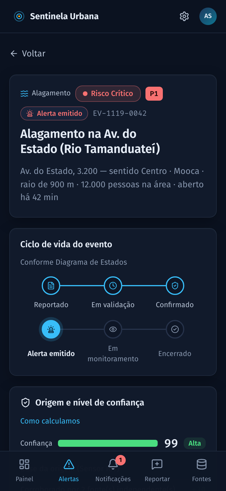
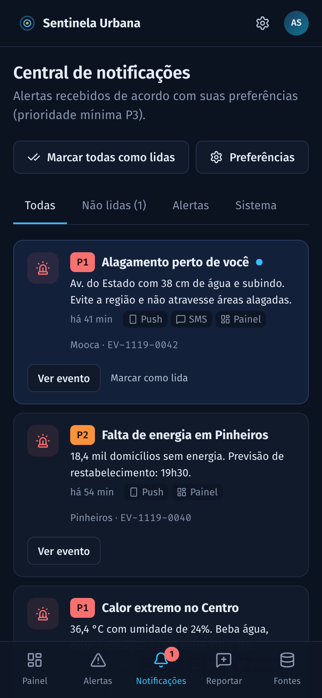
| Requisito | Tela(s) | Componente da arquitetura | Diagrama |
|---|---|---|---|
| RF01 | T01 | API Gateway, Identidade e Acesso, Serviço de Privacidade | — |
| RF02 | T07, T08 | Serviço de Ingestão, Barramento | Sequência 1–7 |
| RF03 | T04, T07 | Processador de Eventos | Sequência 8–10; Estados Reportado→Descartado |
| RF04 | T04 | Processador de Eventos | Sequência 11; Estados autotransição |
| RF05 | T02–T04, T07, T08 | Serviço de Confiança | Sequência 12–13 |
| RF06 | T03, T04 | Motor de Risco, Gestor de Alertas | Sequência 14–17 |
| RF07 | T02 | Apresentação + Cache | — |
| RF08 | T03 | Apresentação + Eventos geoespaciais | — |
| RF09 | T04 | Gestor de Alertas | Estados (stepper) |
| RF10 | T06 | App → Ingestão → Privacidade | Sequência (fonte = App) |
| RF11 | T04 | Ingestão, Confiança | Estados: novaEvidência |
| RF12 | T04, T05 | Gestor de Alertas | Sequência alt validação; Estados |
| RF13 | T05 | Serviço de Notificação, Privacidade | Sequência par Push/SMS/Painel |
| RF14 | T05 | Serviço de Notificação | — |
| RF15 | T07, T08 | Ingestão (saúde das fontes), Observabilidade | — |
| RF16 | T04 | Portal do Operador, Gestor de Alertas | Estados: serviçoRestabelecido |
| RF17 | T09 | Serviço de Privacidade (preferências) | Sequência obterDestinatarios |
| RF18 | T01, T09 | Serviço de Privacidade, Cofre de dados pessoais | — |
| RF19 | T10 | Serviço de Análises, Data lake | — |
| RF20 | T09 | Log de auditoria | — |
| Indicador | Como medimos | Meta | Onde aparece |
|---|---|---|---|
| Tempo de atualização | Tempo entre o recebimento do dado e a entrega da notificação (p50 e p95); idade de cada fonte | p95 ≤ 60 s | T10, T02, T07 |
| Qualidade dos alertas | Eventos confirmados ÷ eventos validados (precisão); taxa de descarte | ≥ 85% | T10 |
| Facilidade de uso | Questionário SUS e tempo para registrar ocorrência | SUS ≥ 75; < 60 s | T10, T06 |